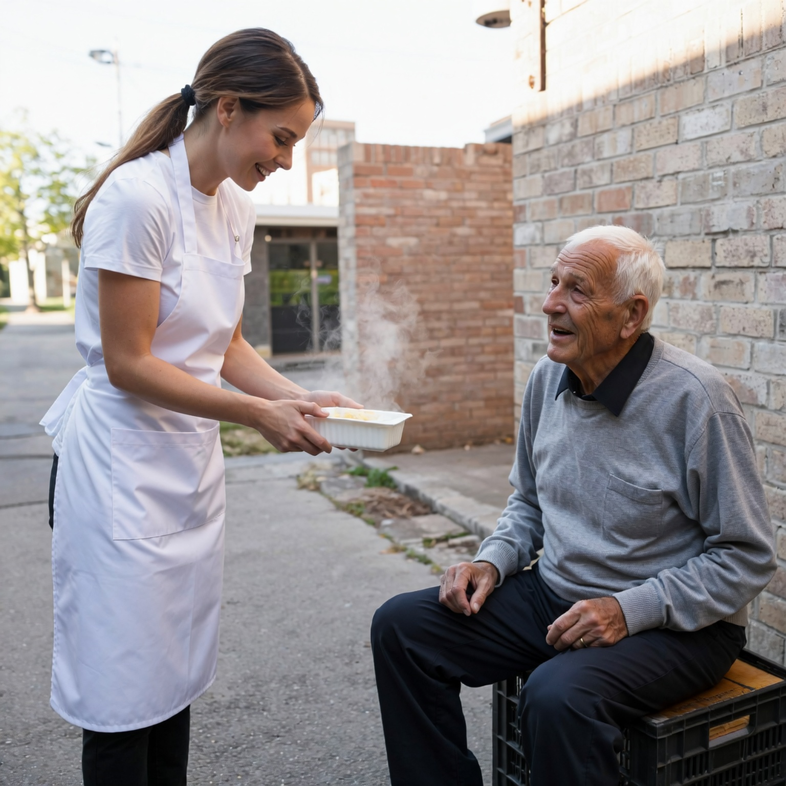
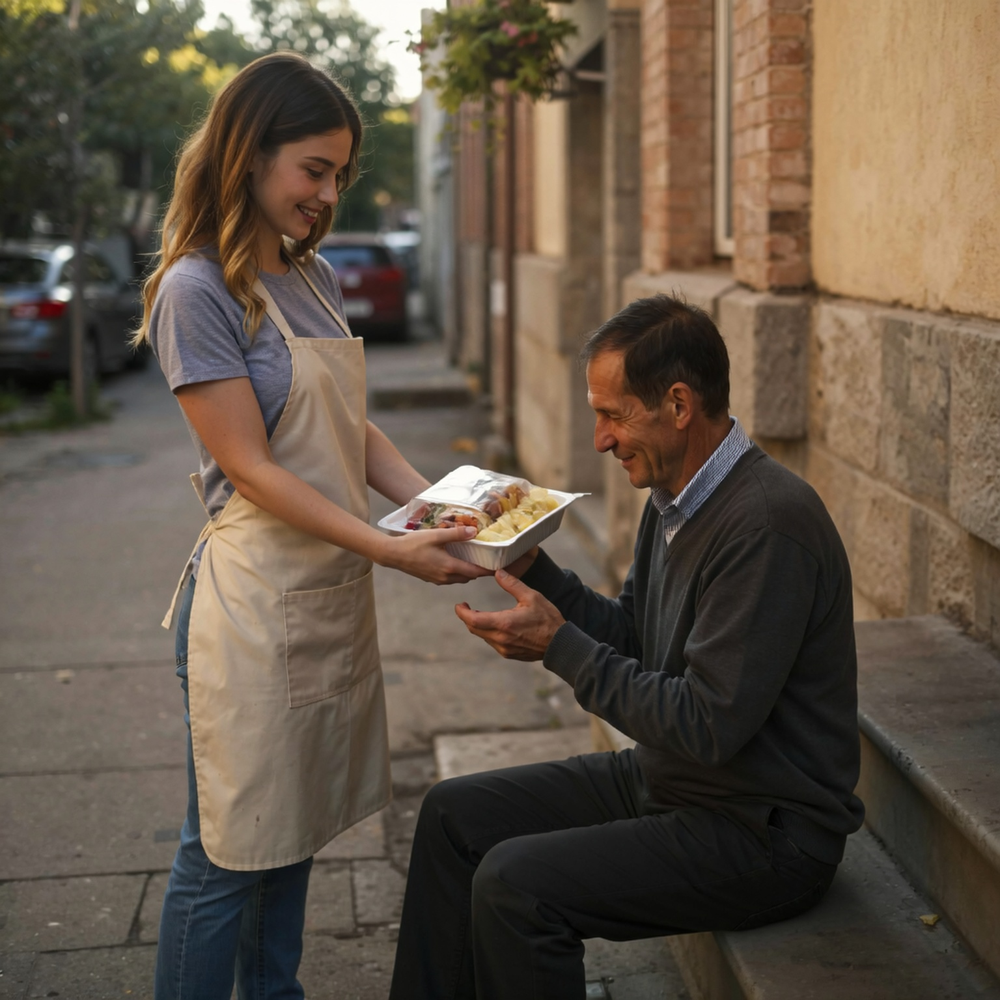
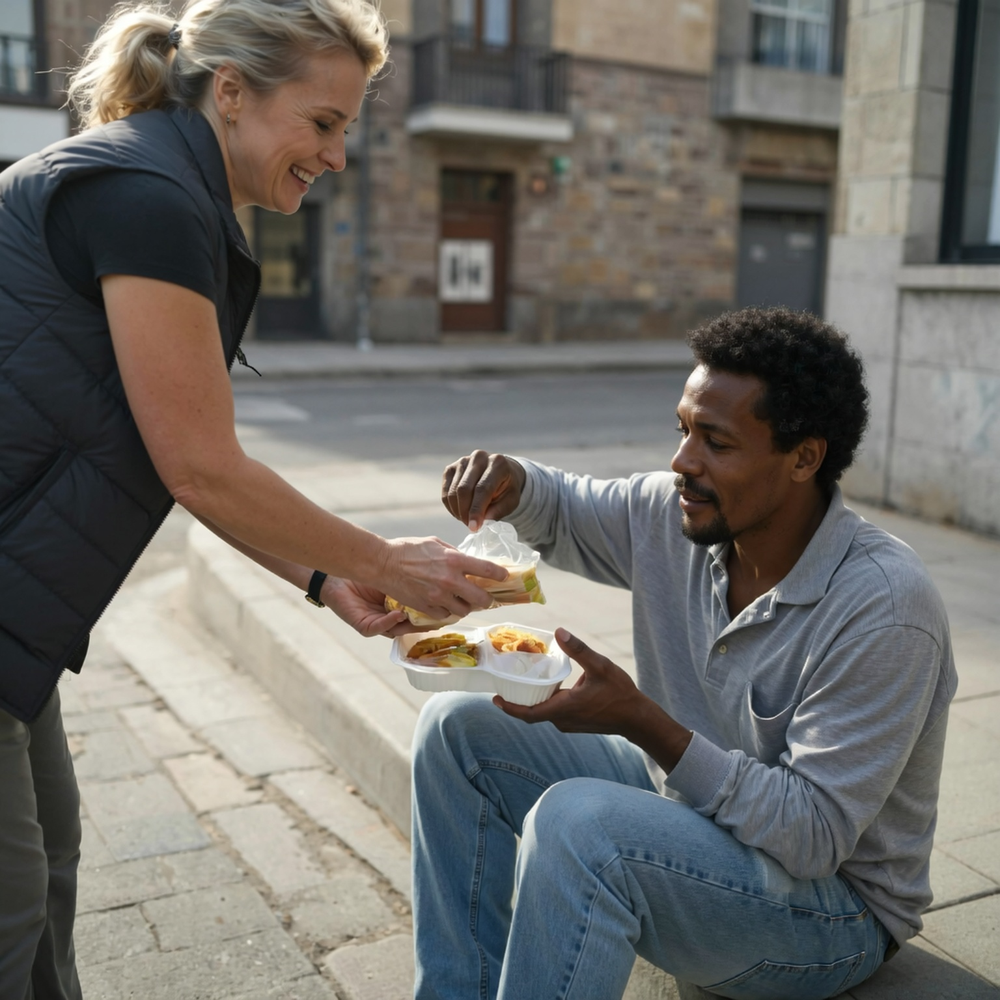
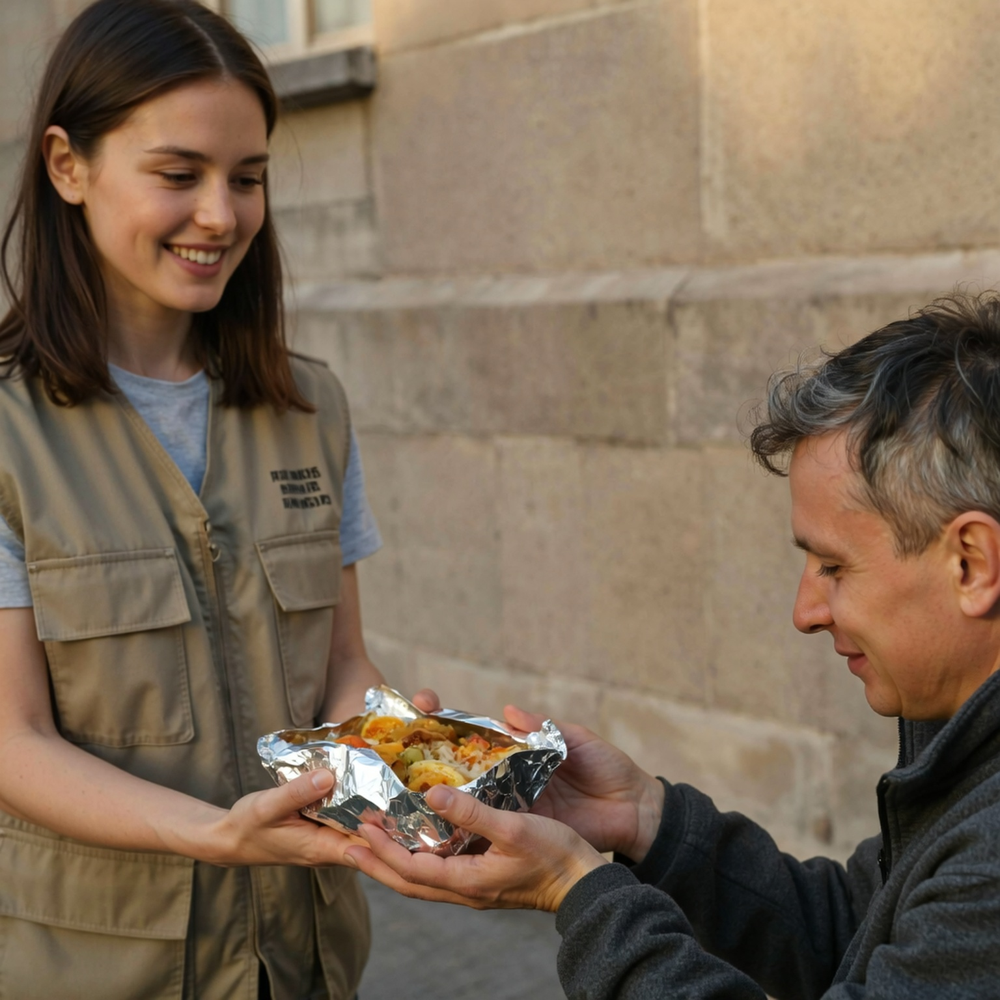
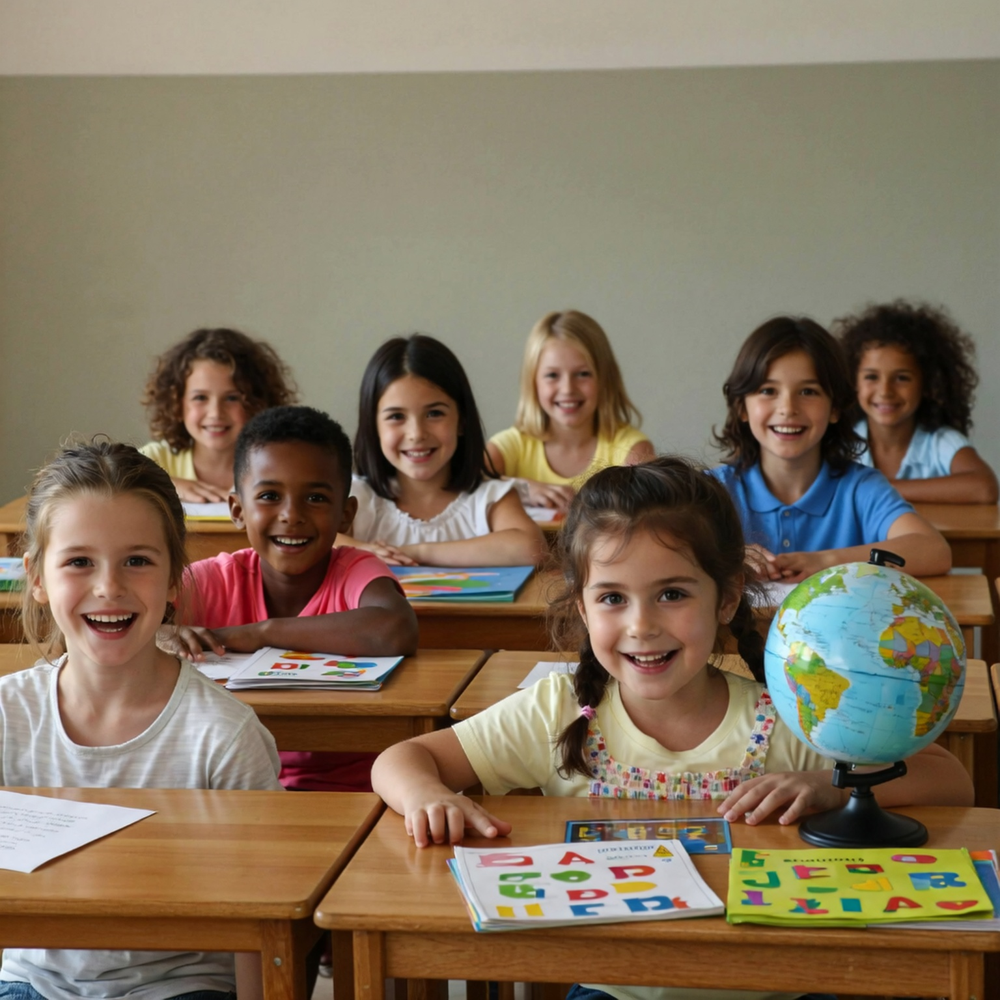
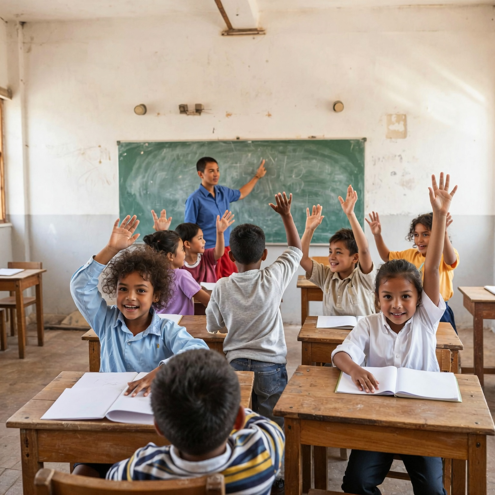
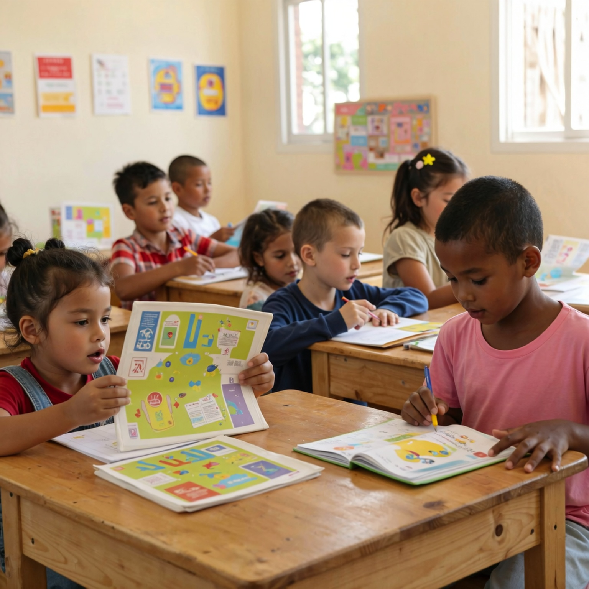
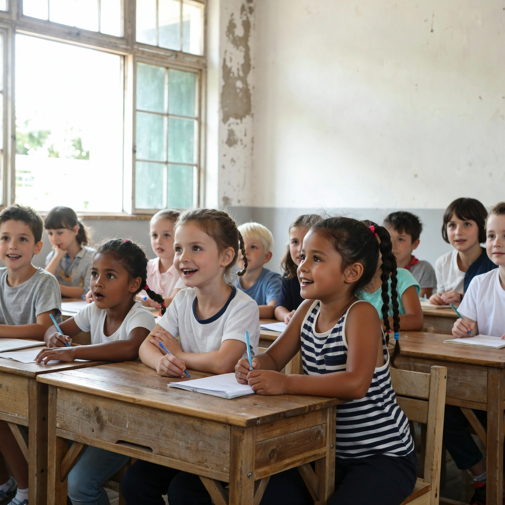

O Mesa Viva é um projeto social dedicado a combater a fome e
promover dignidade para famílias em situação de vulnerabilidade.
Acreditamos que acesso à alimentação de qualidade é um direito
básico e essencial para o desenvolvimento humano, e trabalhamos para
garantir que ninguém precise dormir com fome.
Através de parcerias com produtores locais, mercados, restaurantes e
voluntários, resgatamos alimentos que seriam descartados, mas estão
próprios para consumo, transformando-os em refeições nutritivas e
distribuindo para comunidades carentes. Além disso, promovemos ações
educativas sobre alimentação saudável, sustentabilidade e
aproveitamento integral dos alimentos.
Mais do que doar comida, o Mesa Viva busca fortalecer vínculos,
incentivar a solidariedade e construir uma rede de cuidado e
transformação social. Nosso propósito é simples e poderoso: nutrir
vidas, alimentar esperanças e cultivar um futuro mais justo e
humano.
Fotos em destaque

Ação do Mesa Viva

Ação do Mesa Viva

Ação do Mesa Viva

Ação do Mesa Viva
Educar para o Futuro
O Educar para o Futuro é um projeto social dedicado a garantir que
crianças em situação de vulnerabilidade tenham acesso à educação
básica de qualidade e oportunidades reais de desenvolvimento.
Acreditamos que o conhecimento é a chave para transformar vidas e
construir um futuro mais justo, inclusivo e cheio de possibilidades.
Por meio de aulas presenciais, atividades lúdicas, reforço escolar,
acesso a materiais didáticos e acompanhamento socioeducativo,
apoiamos crianças que enfrentam dificuldades acadêmicas e sociais,
ajudando-as a desenvolver habilidades essenciais, fortalecer sua
autoestima e ampliar seus horizontes.
Nosso compromisso vai além do ensino tradicional: promovemos valores
como solidariedade, respeito, cidadania e cuidado com o próximo,
criando um ambiente acolhedor onde cada criança é vista, ouvida e
incentivada a sonhar alto.
O Educar para o Futuro acredita que toda criança tem potencial para
aprender, crescer e transformar o mundo. Nosso papel é contribuir
para que ela tenha as ferramentas e o suporte necessários para
trilhar esse caminho.
Fotos em destaque

Sala de aula cheia

Sala de aula ativa

Concentração dos pequenos

Crianças sorrindo e interessadas
Empodera+
O Empodera+ é um projeto social dedicado a fortalecer a autonomia e
ampliar as oportunidades profissionais de mulheres em situação de
vulnerabilidade social. Acreditamos que o empoderamento econômico é
uma ferramenta essencial para transformação de vidas, promoção da
igualdade e construção de uma sociedade mais justa e inclusiva.
Por meio de capacitações profissionais, mentorias, oficinas de
desenvolvimento pessoal, orientação para elaboração de currículos,
preparação para entrevistas e conexão com empresas parceiras, o
Empodera+ apoia mulheres em sua jornada rumo à independência
financeira e ao protagonismo no mercado de trabalho.
Nosso compromisso vai além da geração de renda: buscamos criar uma
rede de apoio, autoestima e sororidade, onde cada mulher seja
acolhida, valorizada e encorajada a reconhecer sua própria força.
Com foco no crescimento sustentável e na dignidade, o projeto
promove oportunidades reais e oferece ferramentas para que cada
participante possa construir sua trajetória com segurança e
confiança.
Empodera+ — porque quando uma mulher conquista seu espaço, toda a
sociedade avança.
Fotos em destaque
Empodera+ traz as mulheres juntas para a inserção no mercado
de trablaho
Participantes experientes do projeto Empodera+
Aqui as participantes mais experientes mentoram as novatas
O debate é acalourado, o resultado traz muito valor.